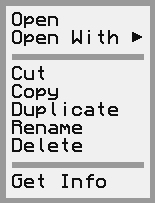

Constructs and adds a new item with an action.
The title of the item
The function to call when the item is clicked
OptionalkeyEquivalent: CCKeyComboA key combo to trigger the action with
Constructs and adds a new menu item for a radio action.
The title for the action
The function to call when the action is triggered
A key combo that will trigger the action, if desired
The ID of the group the item is in
Constructs and adds a new menu item for a checkbox action.
The title for the action
The function to call when the action is triggered
A key combo that will trigger the action, if desired
Whether the checkbox is initially checked
Constructs and adds a new menu item for a submenu.
The title for the submenu
The menu to display under this item
Adds an empty spacer item.
Returns the index of the specified menu item.
The item to look for
The item's index, or undefined if not found
Returns the index of the first menu item with the specified submenu.
The menu to look for
The found item's index, or undefined if not found
Returns the index of the first menu item with the specified title.
The title to look for
The found item's index, or undefined if not found
Inserts an item at the specified index.
The item to add
The index to add at
Returns the menu item at the specified index.
The index of the item
The found item, or undefined if not found
Returns the first menu item with the specified title.
The title to look for
The found item, or undefined if not found
Removes an item at the specified index from the menu.
The index of the item to remove
Serializes the menu into a representation for the window manager.
A serialized representation of the menu
Triggers an incoming action on a nested subitem.
The key of the item that was triggered
Whether an item triggered an action
Holds information about a single menu in the menu bar, either as a top-level menu or a submenu.
